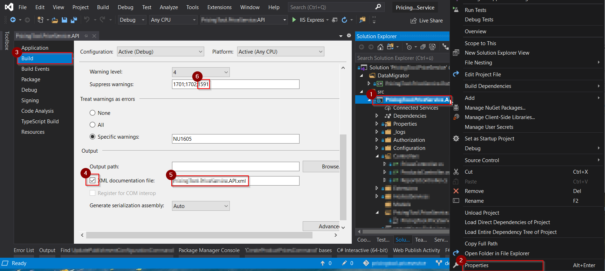
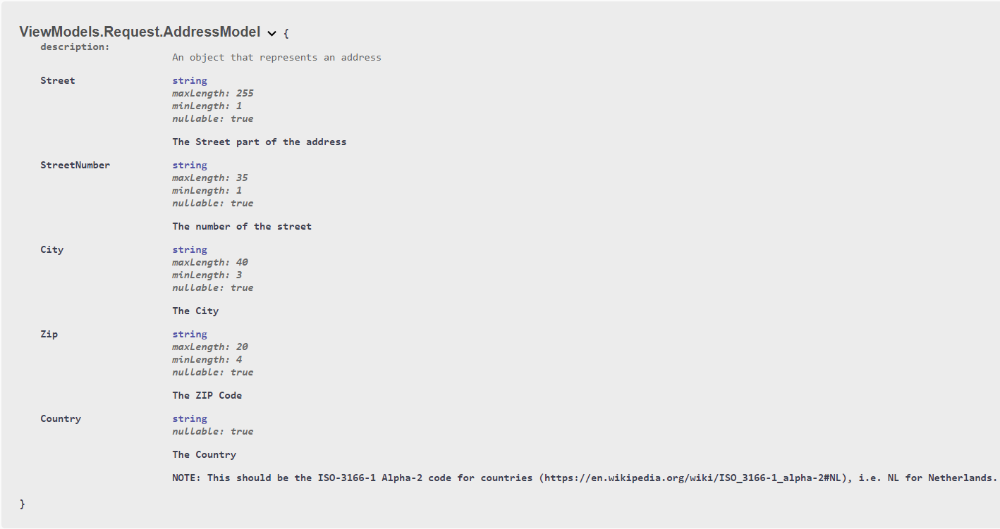

This post contains a few tips and tricks that can help you transform your swagger UI into an interactive documentation. If you don’t yet know how to install swagger in ASP.NET Core, this post will help you Get started with Swagger and ASP.NET Core.
By default, the Swagger UI can be found at http://localhost:. To change the path and set, for example, the Swagger UI at the app’s root, use:
app.UseSwaggerUI(c =>
{
c.SwaggerEndpoint("/swagger/v1/swagger.json", "My API V1");
c.RoutePrefix = string.Empty;
});By default, Swashbuckle generates and exposes Swagger JSON in version 3.0 of the specification -officially called the OpenAPI Specification. To support backwards compatibility, you can opt into exposing JSON in the 2.0 format instead:
app.UseSwagger(c =>
{
c.SerializeAsV2 = true;
});If you want, you can pass information such as the author, license, and description, using the OpenApiInfo object:
services.AddSwaggerGen(c =>
{
c.SwaggerDoc("v1", new OpenApiInfo
{
Version = "v1",
Title = "The .NET Lab API",
Description = "An imaginary API of my blog",
TermsOfService = new Uri("https://blog.georgekosmidis.net/privacy-policy/"),
Contact = new OpenApiContact
{
Name = "George Kosmidis",
Email = string.Empty,
Url = new Uri("https://georgekosmidis.net"),
},
License = new OpenApiLicense
{
Name = "Use under MIT",
Url = new Uri("https://blog.georgekosmidis.net/privacy-policy/"),
}
});
});One of my favorites and very useful features, is to enable swagger to read the XML comments of your actions and objects, transforming it to an interactive documentation.
To do this, you first need to enable the creation of the XML documentation file:

Enabling XML comments provides debug information for all undocumented public types and members. Undocumented types and members are indicated by the warning message. That is why, step 6 is a very good idea!
You need to enable XML commenting for every solution configuration (e.g. Debug and Release)
Once done, just instruct Swagger generator to include the comments:
services.AddSwaggerGen(c =>
{
// Set the comments path for the Swagger JSON and UI.
var xmlFile = $"{Assembly.GetExecutingAssembly().GetName().Name}.xml";
var xmlPath = Path.Combine(AppContext.BaseDirectory, xmlFile);
c.IncludeXmlComments(xmlPath);
});Mark the model with attributes, found in the System.ComponentModel.DataAnnotations namespace, to help drive the Swagger UI components. For example, the following sample model is of an address, annotated with MinLengthAttribe and MaxLengthAttribute
/// <summary>
/// An object that represents an address
/// </summary>
public class AddressModel
{
/// <summary>
/// The Street part of the address
/// </summary>
[MinLength(1), MaxLength(255)]
public string Street { get; set; }
/// <summary>
/// The number of the street
/// </summary>
[MinLength(1), MaxLength(35)]
public string StreetNumber { get; set; }
/// <summary>
/// The City
/// </summary>
[MinLength(3), MaxLength(40)]
public string City { get; set; }
/// <summary>
/// The ZIP Code
/// </summary>
[MinLength(4), MaxLength(20)]
public string Zip { get; set; }
/// <summary>
/// The Country
///
/// NOTE: This should be the ISO-3166-1 Alpha-2 code for countries (https://en.wikipedia.org/wiki/ISO_3166-1_alpha-2#NL), i.e. NL for Netherlands.
/// </summary>
public string Country { get; set; }
}The result of which, is the following in Swagger UI:

Return behavior and status codes is one of the most important concerns a developer has while consuming a RESTful API. Without proper description of the possible outcomes of an action, the consumer is left with unexpected behaviors, something that will not make you popular – at least not for good reasons.
In the following example, taken from Microsoft, we can see how to describe “Response Types“:
/// <summary>
/// Creates a TodoItem.
/// </summary>
/// <remarks>
/// Sample request:
///
/// POST /Todo
/// {
/// "id": 1,
/// "name": "Item1",
/// "isComplete": true
/// }
///
/// </remarks>
/// <param name="item"></param>
/// <returns>A newly created TodoItem</returns>
/// <response code="201">Returns the newly created item</response> //Describe the response 201
/// <response code="400">If the item is null</response> //Describe the response 400
[HttpPost]
[ProducesResponseType(StatusCodes.Status201Created)] //Instruct Swagger about the 201
[ProducesResponseType(StatusCodes.Status400BadRequest)] //Instruct Swagger about the 400
public ActionResult<TodoItem> Create(TodoItem item)
{
_context.TodoItems.Add(item);
_context.SaveChanges();
return CreatedAtRoute("GetTodo", new { id = item.Id }, item);
}The default UI is great but there are cases where you need to your API documentation pages to represent your brand or theme. Branding the Swashbuckle components requires adding the resources to serve static files and building the folder structure to host those files.
In order to do that, you first need to enable static files middleware:
public void Configure(IApplicationBuilder app)
{
app.UseStaticFiles();
//...
}And then, after creating your own CSS, feed it to swagger:
app.UseSwaggerUI(c =>
{
c.InjectStylesheet("/your_path/your_theme.css");
}Any more configurations you think I should include? Drop me a line, there are sure numerous other tips and tricks!
For a Quick Start guide on how to install Swagger visit Get started with Swagger and ASP.NET Core.